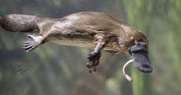

El ornitorrinco, también conocido como platipo, es un animal semiacuático monotrema, es decir, un mamífero que conserva características reptiles como la reproducción ovípara, que vive en los ríos y tiene hábitos nocturnos y que habita en el este de Australia y la isla de Tasmania (sur del país)

los "ornitorrinco" son unos animales exoticos